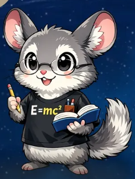

MASCOTE OFICIAL · ASSISTENTE DE FÍSICA
Aprenda Física conversando.
O mascote do Diário dos BNs ajuda a entender conceitos, resolver dúvidas e explorar os laboratórios e as animações do site, passo a passo.
Entre na sua conta para enviar perguntas e manter o histórico salvo. As mensagens ficam associadas à sua conta; evite compartilhar dados pessoais ou senhas.
BNzinhoMascote e guia de Física
Pronto para conversar
Entre para conversar
As perguntas só podem ser enviadas com login. Depois de entrar, você volta para este chat e suas conversas serão salvas.
Entrar na contaA IA pode cometer erros. Confira resultados e fórmulas com o material didático.